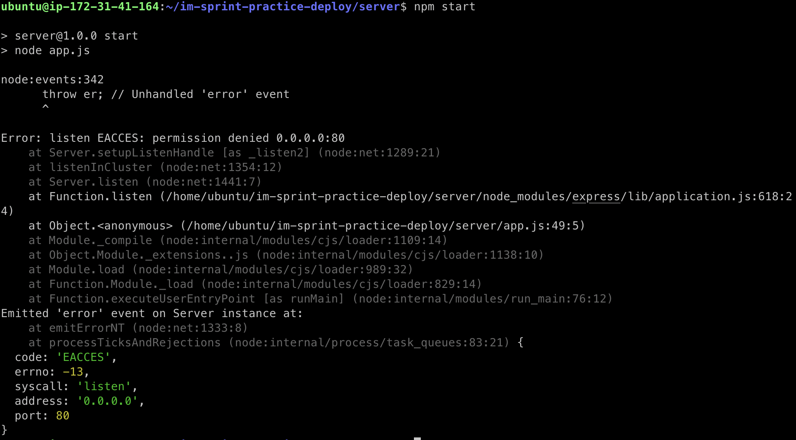

EC2 인스턴스를 생성하는 것은 가상 PC 한 대를 임대하는 것과 같다.
컴퓨터 운영체제를 처음 구입하면 필요한 프로그램을 설치해야 하듯이 EC2 인스턴스에 처음 접속하면 서버를 구동하는 데 필요한 개발 환경을 구축하는 것부터 시작해야 한다.
개발 환경의 서버가 Node.js 라고 가정하고 nvm과 Node.js 설치 방법을 설명한다.
패키지 매니저가 관리하는 패키지의 정보를 최신 상태로 업데이트하기 위해서 아래 명령어를 사용한다.
sudo apt update
어느 정도의 시간이 지나고 업데이트 과정이 끝나면 nvm을 설치한다.
curl -o- https://raw.githubusercontent.com/nvm-sh/nvm/v0.39.1/install.sh | bash
or
wget -qO- https://raw.githubusercontent.com/nvm-sh/nvm/v0.39.1/install.sh | bash
만일 Command 'wget' not found 메세지와 함께 설치가 진행되지 않는 경우 Package Manager를 이용해 wget을 설치한 후 진행한다.
sudo apt install wget
nvm 설치 과정이 마무리되면 터미널에 아래 명령어를 입력하여 nvm 설치가 정상적으로 끝났는지 확인한다.
nvm --version
버전이 잘 나온다면 nvm 설치가 성공적으로 되었고 nvm: command not found가 표시되면 현재 터미널을 닫고 새 터미널을 연 다음 다시 확인하거나 해당 셸(shell)에 대한 아래 명령어를 입력한다.
bash : source ~/.bashrc
zsh : source ~/.zshrc
ksh : . ~/.profile
nvm 설치가 완료되면 Node.js를 설치한다.
nvm install node
성공적으로 Node.js가 설치되었으면 아래 명령어로 Node.js 버전을 확인한다.
node -v
nvm과 Node.js 설치에 대해서 다루었던 내용의 링크를 첨부한다.
npm start 명령어를 이용해서 서버를 실행하면 아래와 같은 오류 메세지가 터미널에 보일 때가 있다.

위 오류 메세지가 보이는 이유는 1024번 아래의 포트 번호를 이용해서 서버를 실행하려면 관리자 권한이 필요하기 때문이다.
관리자 권한으로 서버를 시작하기 위해서는 아래와 같은 명령어를 입력한다.
sudo npm start